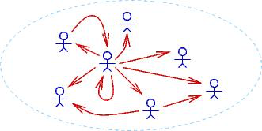
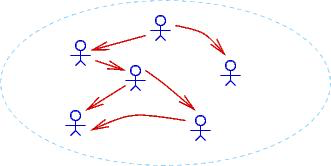

Logika: Programming Logics
4. The Predicate-Logic Quantifiers
4. The Predicate-Logic Quantifiers¶
In the previous chapter, we studied how to combine primitive propositions with
the operators,
∧,
∨,
→, and
¬.
When we wrote propositions like (p ∧ q) → r, we pretended that p,
q, and r stood for complete, primitive statements like “It is raining”
or “x + 1 > 0”.
We did not try to disassemble p, q, and r.
Now it is time to decompose and analyze primitive propositions in terms of their “verbs” (called predicates) and their “nouns” (called individuals). This leads to predicate logic.
First, some background: When we study a particular “universe” or “domain”
consisting of “individuals”, we make assertions (propositions) about the
individuals in the domain.
Example domains are: the domain of all animals, the domain of U.S. Presidents,
the domain of days-of-the-week, the domain of crayon colors,
the domain of integers, the domain of strings, etc.
We assemble propositions by using the individuals in the domain along with some
predicates.
For example, for the domain of integers, we use predicates like == and
>, like this: 3 > 5, 2 * x == y + 1, etc.
(Here, 3 and 5 are individuals, and x and y are names of
individuals.)
As these examples show, we might also use functions, like * and +, to
compute new individuals.
For nonnumeric domains like humans, animals, and objects, predicates are written
in a function-call style, like this: hasFourLegs(_), isTheMotherOf(_,_),
isHuman(_), isOlderThan(_,_), etc.
So, if Lassie is an individual animal, we write hasFourLegs(Lassie) to
make the proposition, “Lassie has four legs”.
Another example is isOlderThan(GeorgeWashington, AbrahamLincoln), which uses
the individuals GeorgeWashington and AbrahamLincoln.
Predicate logic has two important new operators that let us write stronger propositions than what we can do with mere predicates. These operators are called quantifiers. The quantifers are “for all” (∀), and “exists” (∃). In this chapter, we will learn to use the quantifiers to reason about data structures.
The ∀ quantifier helps us write propositions about all the individuals
in a domain.
Say we consider the domain of animals.
The sentence, “All humans are mortal” is written like this:
∀x (isHuman(x) → isMortal(x))
That is, if an individual, x, is human, then x is mortal also.
(Notice that dogs like Lassie are individuals in the animal domain, but the above
proposition cannot be used to show that Lassie is mortal, since dogs aren’t
human.
Sadly, dogs are nonetheless mortal.)
An arithmetic example looks like this: for the domain of integers, “every value is less-than-or-equal to its square”:
∀n (n <= n * n)
A data-structure example looks like this: For a list, r, we can assert that
every element of r is positive:
∀i ((i >= 0 ∧ i < r.size) → r(i) > 0)
That is, for every index int, i, in the range of 0 up to (but not
including) r.size (the length of r), the indexed element r(i) is
greater than 0.
The previous statement is often written in a “shorthand” like this:
∀i: 0 <= i < r.size, r(i) > 0
which we later use in many of our programming examples.
The ∃ quantifier helps us write propositions about specific individuals
in a domain, where the name of the individual is unimportant or unknown.
For example, we can say that Lassie has a mother like this:
∃x isMotherOf(x, Lassie) // isMother(parent, child)
(“There exists some x such that x is the mother of Lassie”.)
Here is how we write that every individual in the domain has a mother:
∀x∃y isMotherOf(y, x)
For the domain of integers, we can make assertions like these:
∃x (x * x = x)
∃y (y + 2 = 9)
∀x (x > 1) → (∃y (y > 0 and y + 1 = x))
For the list r, we can say that r holds at least one negative int like
this:
∃i (i >= 0 ∧ i < r.size ∧ r(i) < 0)
(The shorthand version is ∃i: 0 <= i < r.size, r(i) < 0.)
Lots more examples will follow.
With the new format of primitive propositions, we can write proofs like before:
isHuman(Socrates) → isMortal(Socrates), isHuman(Socrates) |- isMortal(Socrates) ∧ isHuman(Socrates)
{
1. isHuman(Socrates) → isMortal(Socrates) premise
2. isHuman(Socrates) premise
3. isMortal(Socrates) → e 1 2
4. isMortal(Socrates) ∧ isHuman(Socrates) ∧i 3 2
}
But more importantly, we will learn to prove claims like this:
∀x(isHuman(x) → isMortal(x)), isHuman(Socrates) |- isMortal(Socrates)
4.1. The Universal Quantifier and Its Deduction Rules¶
Like the other logical operators, ∀ has an introduction rule and an
elimination rule.
It works best to introduce the rules via examples.
First, here is the most famous claim in logic:
All humans are mortal.
Socrates is human.
Therefore, Socrates is mortal.
We express this ancient claim like this:
∀x (isHuman(x) → isMortal(x)), isHuman(Socrates) |- isMortal(Socrates)
Clearly, we require a kind of matching/binding rule to prove that the human
individual, Socrates, is mortal. The rule is ∀e
(“all elimination”):
∀x (isHuman(x) → isMortal(x)), isHuman(Socrates) |- isMortal(Socrates)
{
1. ∀x (isHuman(x) → isMortal(x)) premise
2. isHuman(Socrates) premise
3. isHuman(Socrates) → isMortal(Socrates) ∀e 1 Socrates
4. isMortal(Socrates) → e 3 2
}
Line 3 shows that the claim on Line 1, which holds for all individuals in the
domain, can apply specifically to Socrates, an individual member of the
domain.
We use the new knowledge on Line 3 to reach the conclusion on Line 4.
∀e tailors a general claim, prefixed by ∀x, to any individual
element (who replaces the x).
We see this in Line 3 above.
Here is the rule’s schematic:
∀x P(x)
∀e: -----------
P(v) that is, [v/x]P(x),
where v is an individual
in the domain
In the domain of integers, from the premise, ∀i (i + 1 > i), we apply ∀e to
deduce [3/i](i + 1 > i), that is, 3 + 1 > 3.
The other deduction rule, ∀i (“all-introduction”), deduces propositions
that are prefixed by ∀.
Here is a motivating example, in the domain of integers:
∀x((x + 1) > x), ∀x(x > (x - 1)) |- ∀x((x + 1) > x ∧ x > (x - 1))
In its prepositional logic mode, Logika will not process the numerical comparisons. Everything evaluated must evaluate to True or False. We can get arround this limitation by writing uninterpreted functions where: gt(y,x) returns true if y>x, inc(x) returns x + 1 and dec(x) returns x - 1. Recalll that uninterpreted functions are assumed to return the required type.
Or:
∀x gt(inc(x), x), ∀x gt(x, dec(x)) |- ∀x gt(inc(x), x) ∧ gt(x, dec(x))
That is, we wish to prove that for every possible integer, the integer is smaller than its successor and larger than its predecessor. How do we do this?
Clearly, we will not inspect all of ..., -2, -1, 0, 1, 2, ... and verify that
(-2 + 1) > -2 ∧ -2 < (-2 - 1), (-1 + 1) > -1 ∧ -1 < (-1 - 1), (0 + 1) > 0 ∧ 0 < (0 - 1),
etc.!
Instead, we write a single, generic, general-purpose argument — a
“case analysis” — that applies to whichever, arbitrary int we would ever
consider.
Let a stand for the arbitrary int we will discuss. The choice of a
(instead of b etc) is somewhat arbitrary. One can select any letter provided
it has not been used before in the scope of the proof or sub-proof. We use to
term “fresh” to indicate such a letter selection.
The case analysis appears in the proof like this:
∀x gt(inc(x), x), ∀x gt(x, dec(x)) |- ∀x gt(inc(x), x) ∧ gt(x, dec(x))
{
1. ∀x gt(inc(x), x) premise
2. ∀x gt(x, dec(x)) premise
3. {
4. a
5. gt(inc(a), a) ∀e 1 a
6. gt(a, dec(a)) ∀e 2 a
7. gt(inc(a), a) ∧ gt(a, dec(a)) ∧i 5 6
}
8. ∀x gt(inc(x), x) ∧ gt(x, dec(x)) ∀i 3
}
Lines 3-7 are the generic argument: let a be the arbitrary/anybody integer
we discuss.
By Lines 1 and 2, we must have that (a + 1) > a and that a > (a - 1).
Line 6 uses ∧i to show a has the property (a + 1) > a ∧ a > (a - 1).
Since the argument in Lines 3-7 is not specific to any specific integer, we can
use the argument on all the individual integers – that is, we can substitute
-2 for a and the argument holds;
we can substitute -1 for a and the argument holds;
we can substitute 0 for a and the argument holds; and so on!
Line 8 is justified by the new deduction rule, ∀i, which asserts that
the generic case analysis in Lines 3-7 applies to all the individual integers.
Here is the rule’s schematic:
{ a (a is fresh)
. . . P(a) }
∀i: ---------------
∀x P(x) (That is, P(x) is [x/a]P(a).
Thus, a _does not appear_ in P(x), and
every premise and assumption visible
to ∀x P(x) _does not mention_ a)
To repeat this important idea: The rule says, to prove a claim of form,
∀x P(x), we undertake a case analysis:
we prove property P(a) for an arbitrary member, a, of domain D.
(Call the element, “Mx a” — Mx arbitrary — Mx anybody —
Mx anonymous).
Since Mx a is a complete unknown, it stands for “everyone” in domain D.
We know that we can substitute whichever domain element, d, from domain
D we want into the proof and we get a proof of P(d).
In this way, we have proofs of P for all elements of domain D.
Here is the same idea, used in a proof about a domain of people: “Everyone is healthy; everyone is happy. Therefore, everyone is both healthy and happy”:
∀x isHealthy(x), ∀y isHappy(y) |- ∀z(isHealthy(z) ∧ isHappy(z))
{
1. ∀x isHealthy(x) premise
2. ∀y isHappy(y) premise
3. {
4. a
5. isHealthy(a) ∀e 1 a
6. isHappy(a) ∀e 2 a
7. isHealthy(a) ∧ isHappy(a) ∧i 5 6
}
8. ∀z(isHealthy(z) ∧ isHappy(z)) ∀i 3
}
Say that we have a domain of living beings. This next example requires nested cases
All humans are mortal
All mortals have a soul
Therefore, all humans have soul
∀x (isHuman(x) → isMortal(x)), ∀y (isMortal(y) → hasSoul(y)) |- ∀x (isHuman(x) → hasSoul(x))
{
1. ∀x (isHuman(x) → isMortal(x)) premise
2. ∀y (isMortal(y) → hasSoul(y)) premise
3. {
4. a
5. {
6. isHuman(a) assume
7. isHuman(a) → isMortal(a) ∀e 1 a
8. isMortal(a) → e 7 6
9. isMortal(a) → hasSoul(a) ∀e 2 a
10. hasSoul(a) → e 9 8
}
11. isHuman(a) → hasSoul(a) → i 5
}
12. ∀x (isHuman(x) → hasSoul(x)) ∀i 3
}
Line 4 states that we use a to stand for an arbitrary individual of the
domain.
Line 6 starts a nested case, which assumes a is human.
Then we can prove that a has a soul, hence by → i,
isHuman(a) → hasSoul(a).
Since the outer case is stated in terms of the arbitrary, anonymous individual,
a, we can finish the proof on Line 12 by ∀i.
Here is a last, important example. Let the domain be the members of one family. We can prove this truism
Every (individual) family member who is healthy is also happy.
Therefore, if all the family members are healthy, then all the members are happy.
∀x (healthy(x) → happy(x)) |- (∀y healthy(y)) → (∀x happy(x))
{
1. ∀x healthy(x) → happy(x) premise
2. {
3. ∀y healthy(y) assume
4. {
5. a
6. healthy(a) ∀e 3 a
7. healthy(a) → happy(a) ∀e 1 a
8. happy(a) → e 7 6
}
9. ∀ x happy(x) ∀i 4
}
10. (∀y healthy(y)) → (∀x happy(x)) → i 2
}
We commence by assuming all the family is healthy (Line 3).
Then, we consider an arbitrary/anonymous family member, a, and show that
healthy(a) is a fact (from Line 3).
Then we deduce happy(a).
Since a stands for anyone/everyone in the family, we use ∀i to
conclude on Line 7 that all family members are happy.
Line 10 finishes.
Consider the converse claim; is it valid?
If all the family members are healthy, then all are happy.
Therefore, for every (individual) family member, if (s)he is healthy then
(s)he is also happy.
Well, no – perhaps the family is so close-knit that, if one one family member is unhealthy; then other, healthy, family members might well be unhappy with worry. This is a subtle point, so take a moment and think about it!
Let’s try to prove the dubious claim and see where we get stuck:
(∀y healthy(y)) → (∀x happy(x)) |- ∀x (healthy(x) → happy(x))
{
1. (∀y healthy(y)) → (∀x happy(x)) premise
2. {
3. a assume
4. {
5. healthy(a) assume // WE ARE TRYING TO PROVE happy(a)?!
}
}
6. ∀y healthy(y) ∀i 2?? // NO--WE ARE TRYING TO FINISH THE OUTER
// OUTER BLOCK BEFORE THE INNER ONE
// IS FINISHED!
No matter how you might try, you will see that the “block structure” of the proofs warns us when we are making invalid deductions. It is impossible to prove this claim.
4.1.1. More Examples¶
We state some standard exercises with ∀, where the domains and
predicates are unimportant:
∀x f(x) |- ∀y f(y)
{
1. ∀x f(x) premise
2. {
3. a
4. f(a) ∀e 1 a
}
5. ∀y f(y) ∀i 2
}
∀z (f(z) ∧ g(z)) |- (∀x f(x)) ∧ (∀y g(y))
{
1. ∀z (f(z) ∧ g(z)) premise
2. {
3. a
4. f(a) ∧ g(a) ∀e 1 a
5. f(a) ∧e1 4
}
6. ∀x f(x) ∀i 2
7. {
8. b
9. f(b) ∧ g(b) ∀e 1 b
10. g(b) ∧e2 9
}
11. ∀y g(y) ∀i 7
12. (∀x f(x)) ∧ (∀y g(y)) ∧i 6 11
}
The earlier example about healthy and happy families illustrates an important
structural relationship between ∀ and →:
∀x (f(x) → g(x)) |- (∀x f(x)) → (∀x g(x))
can be proved, but the converse cannot.
This last one is reasonable but the proof is a bit tricky because of the nested subproofs:
∀x∀y f(x,y) |- ∀y∀x f(x,y)
{
1. ∀x∀y f(x,y) premise
2. {
3. b
4. {
5. a
6. ∀y f(a,y) ∀e 1 a
7. f(a,b) ∀e 6 b
}
8. ∀x f(x,b) ∀i 4
}
9. ∀y∀x f(x,y) ∀i 2
}
4.1.2. Tactics for the ∀-rules¶
As in the previous chapter, we now give advice as to when to use the ∀i
and ∀e rules.
(***)
∀i-tactic: To provePremises |- ∀x P(x),- assume
a, for a new, anonymous “Mxa” - prove
Premises |- P(a) - finish with
∀i.
The proof structure looks like this:
1. Premises premise i. { j. a (fill in) k. P(a) } l. ∀x P(x) ∀i i This tactic was applied in Lines 2-9 of the previous (correct) example proof.- assume
(*)
∀e-tactic: To provePremises, ∀x P(x) |- Q, then for an individual,i, that appears in the proof so far, use the∀erule to deduce the new fact,P(i):1. Premises premise 2. ∀x P(x) premise . . . j. P(i) ∀e 2 (fill in) k. QThis tactic should be used only when it is clear that the new fact makes a significant step forwards to finishing the proof. Steps 4 and 5 of the previous (correct) example proof used this tactic.
4.1.3. Other Ways of Proving Propositions with The Universal Quantifier¶
How do we prove an assertion of the form, ∀x P(x)?
We just saw that ∀i can do this for any domain whatsoever.
But there are, in fact, three different approaches, depending on the form of
domain we use:
Approach 1: use conjunctions for a finite domain
Say that the domain we study is a finite set,
D = {e0, e1, ..., ek}. (An example domain is the days of the week,{sun, mon, tues, weds, thurs, fri, sat}.)This makes
∀x P(x)just an abbreviation itself of this much-longer assertion:P(e0) ∧ P(e1) ∧ ... ∧ P(ek)
For example, when the domain is the days of the week, the assertion,
∀d isBurgerKingDay(d), abbreviates:isBurgerKingDay(sun) ∧ isBurgerKingDay(mon) ∧ ... ∧ isBurgerKingDay(sat)
To prove such a
∀x P(x)for a finite domainD, we must proveP(ei), for each and everyeiinD.We can use this approach when we are analyzing all the elements of a finite-length list. Say that list
rhas length 4. We can say that the domain of its indexes is{0, 1, 2, 3}. So, if we wish to prove that∀ 0 <= i < 4, r(i) > 0, we need only prove thatr(0) > 0 ∧ r(1) > 0 ∧ r(2) > 0 ∧ r(3) > 0.Approach 2: for the domain of nonnegative ints, use mathematical induction
The domain,
Nat = {0, 1, 2, ... }is infinite, so we cannot use the previous technique to prove properties like∀ n > 0, (n + 1) > n– we would have to write separate proofs that0 + 1 > 0, 1 + 1 > 1, 2 + 1 > 2, ..., forever. But we can use mathematical induction.Approach 3: for any domain, finite or infinite whatsoever, use the
∀i-lawFinally, we might be using a large domain that is not as organized as the nonnegatives,
0,1,2,.... Maybe the domain is the domain of all humans or all the citizens of Peru or the members of the Republican party or all the objects on Planet Earth. How can we prove∀ x P(x)for such huge collections?To prove a claim of form,
∀x P(x), for an arbitrary domain, we undertake a kind of case analysis: we prove propertyP(a)for an arbitrary member,a, of domainD. (Call the element, “Mxa” — Mx arbitrary — Mx anybody — Mx anonymous). Since Mxais a complete unknown, it stands for “everyone” in domanD. We know that we can substitute whichever domain element,dfrom domainD, we want into the proof and we get a proof ofP(d). In this way, we have proofs ofPfor all elements of domainD.This is the idea behind the
∀i-rule.
4.2. The Existential Quantifier¶
The existential quantifier, ∃, means
“there exists” or “there is”.
We use this phrase when we do not care about the name of the individual involved
in our claim.
Here are examples:
There is a mouse in the house: ∃m (isMouse(m) ∧ inHouse(m))
(We don't care about the mouse's name.)
Someone ate my cookie: ∃x ateMyCookie(x)
There is a number that equals its own square: ∃n n == n*n
For every int, there is an int that is smaller: ∀x ∃y y < x
If we have a fact about an individual in a domain, we can use the fact to deduce a fact that begins with an existential quantifier. For example, if we know that:
isHuman(Socrates) ∧ isMortal(Socrates)
surely we can conclude that:
∃h (isHuman(h) ∧ isMortal(h))
that is, “there is someone who is human and mortal”.
The identity of the human is no longer important to us.
In the next section, we see that the ∃i-rule makes such deductions.
4.2.1. The Existential-Introduction Rule¶
Often ∃ is used to “hide” secret information.
Consider these Pat Sajack musings from a typical game of Wheel of Fortune:
Pat thinks: “There is an ‘E’ covered over on Square 14 of the game board”. In predicate logic, this can be written:
isCovered(Square14) ∧ holds(Square14,'E').
Pat thinks: “Wait – I can’t say that on TV! Perhaps I can say, There is a vowel covered on Square 14 of the game board”. In predicate logic, this is written:
isCovered(Square14) ∧ (∃c isVowel(c) ∧ holds(Square14,c)).
In this way, Pat does not reveal the letter to the game players and TV viewers.
Because it isn’t fair to tell the players which squares hold vowels, Pat announces on the air, “There is a vowel that is still covered on the game board”:
∃s (isSquare(s) ∧ isCovered(s) ∧ (∃c isVowel(c) ∧ holds(s,c)))
This statement hides the specific square and letter that Pat is thinking about.
Pat’s announcement was deduced from its predecessors by means of the
∃i-rule, which we see in a moment.
What can a game player do with Pat’s uttered statement? A player might deduce these useful facts:
There is a square still covered:
∃s isSquare(s) ∧ isCovered(s)There is a vowel:
∃c isVowel(c)There is a covered letter,
A,E,I,O,U(assuming the vowels are exactlyA,E,I,O,U):∃s isSquare(s) ∧ isCovered(s) ∧ (holds(s,'A') ∨ holds(s,'E') ∨ holds(s,'I') ∨ holds(s,'O') ∨ holds(s,'U'))
Although the game player does not know the letter and square that Pat Sajak
“hid” with his statement, the player can still make useful deductions.
We will use the ∃e rule to deduce these style of propositions.
∃-Introduction Rule¶
The rule for ∃i has this format:
P(d) where d is an individual in the domain D
∃i: -----------
∃x P(x)
The ∃i rule says, if we locate an individual d (a “witness”, as it
is called by logicians) that makes P true, then surely we can say there
exists someone that has P and hide the identity of the individual/witness.
The rule was used in the previous section in a tiny example:
isHuman(Socrates), isMortal(Socrates) |- ∃h (isHuman(h) ∧ isMortal(h))
{
1. isHuman(Socrates) premise
2. isMortal(Socrates) premise
3. isHuman(Socrates) ∧ isMortal(Socrates) ∧i 1 2
4. ∃h (isHuman(h) ∧ isMortal(h)) ∃i 3 Socrates
}
Since Socrates is an individual that is both human and mortal, we deduce
Line 3.
Line 4 “hides” Socrates’ name.
Let’s do a Wheel-Of-Fortune example: Pat Sajak uses two premises and the
∃i rule to deduce a new conclusion:
isVowel(e), holds(Square14,e) |- ∃c(isVowel(c) ∧ ∃s holds(s,c))
{
1. isVowel(e) premise
2. holds(Square14,e) premise
3. ∃s holds(s,e) ∃i 2 Square14
4. isVowel(e) ∧ ∃s holds(s,e) ∧i 1 3
5. ∃c(isVowel(c) ∧ ∃s holds(s,c)) ∃i 4 e
}
Line 3 hides the number of the square (“there is a square that holds ‘e’”), and Line 5 hides the ‘e’ (“there is a letter that is a vowel and there is a square that holds the letter”).
From the same two premises we can also prove this:
isVowel(e), holds(Square14,e) |- ∃c∃s(isVowel(c) ∧ holds(s,c))
{
1. isVowel(e) premise
2. holds(Square14,e) premise
3. isVowel(e) ∧ holds(Square14,e) ∧i 1 2
4. ∃s(isVowel(e) ∧ holds(s,e)) ∃i 3 Square14
5. ∃c∃s(isVowel(c) ∧ holds(s,c)) ∃i 4 e
}
This reads, “there are a letter and square such that the letter is a vowel and
the square holds the letter”.
The proposition differs slightly from the previous one, but the two seem to have
identical information content.
(When we learn the ∃e-rule, we can prove the two conclusions have
identical content.)
The ∃-Elimination Rule¶
Since the ∃i-rule constructs propositions that begin with ∃, the
∃e-rule disassembles propositions that begin with ∃.
The new rule employs a subtle case analysis.
Here is a quick example (in the universe of things on planet Earth), to get our bearings:
All humans are mortal
Someone is human
Therefore, someone is mortal
We don’t know the name of the individual human, but it does not matter – we can still conclude someone is mortal. The steps we will take go like this
- Since “someone is human” and since we do not know his/her name, we will just make up our own name for them – “Mx A”. So, we assume that “Mr. A is human”
- We use the logic rules we already know to prove that “Mr. A is mortal”.
- Therefore “someone is mortal” and their name does not matter.
This approach is coded into the last logic law, ∃e (exists-elimination).
Say we have a premise of the form, ∃x P(x).
Since we do not know the name of the individual “hidden” behind the
∃x,
we make up a name for it, say a, and discuss what must follow from the
assumption that P(a) holds true:
{a P(a) assume // where a is a new, fresh name
∃x P(x) ... Q } // a MUST NOT appear in Q
∃e: -----------------------------------
Q
That is, if we can deduce Q from P(a), and we do not mention a within
Q, then it means Q can be deduced no matter what name the hidden
individual has.
So, Q follows from ∃x P(x).
We can work the previous example, with ∃e:
All humans are mortal
Someone is human
Therefore, someone is mortal
We make up the name, a, for the individual whose name we do not know, and
do a case analysis:
∀h(isHuman(h) → isMortal(h)), ∃x isHuman(x) |- ∃y isMortal(y)
{
1. ∀h(isHuman(h) → isMortal(h)) premise
2. ∃x isHuman(x) premise
3. {
4. a isHuman(a) assume
5. isHuman(a) → isMortal(a) ∀e 1 a
6. isMortal(a) → e 5 4
7. ∃y isMortal(y) ∃i 6 a
}
8. ∃y isMortal(y) ∃e 2 3
}
Line 4 proposes the name a and the assumption that isHuman(a).
The case analysis leads to Line 7, which says that someone is mortal.
(We never learned the individual’s name!)
Since Line 7 does not explicitly mention the made-up name, a, we use Line 8
to repeat Line 7 – without knowing the name of the individual “hiding” inside
Line 2, we made a case analysis in Lines 4-7 that prove the result, anyway.
This is how ∃e works.
To repeat: The ∃e rule describes how to discuss an anonymous individual
(a witness) without knowing/revealing its identity:
Assume the witness’s name is Mx a (“Mx Anonymous”) and that
Mx a makes P true.
Then, we deduce some fact, Q, that holds even though we don’t know who is
Mx a.
The restriction on the ∃e rule (Q cannot mention a) enforces
that we have no extra information about the identity of Mx a – the name
a must not leave the sub-proof.
Here is a Wheel-of-Fortune example that uses ∃e:
∃c (isVowel(c) ∧ ∃s holds(s,c)) |- ∃d isVowel(d)
{
1. ∃c (isVowel(c) ∧ ∃s holds(s,c)) premise
2. {
3. a isVowel(a) ∧ ∃s holds(s,a) assume
4. isVowel(a) ∧e1 3
5. ∃d isVowel(d) ∃i 4 a
}
6. ∃d isVowel(d) ∃e 1 2
}
We do not know the identity of the vowel held in an unknown square, but this does not prevent us from concluding that there is a vowel.
Standard Examples¶
For practice, we do some standard examples:
∃x p(x) |- ∃y p(y)
{
1. ∃x p(x) premise
2. {
3. a p(a) assume
4. ∃y p(y) ∃i 3 a
}
5. ∃y p(y) ∃e 1 2
}
∃x(f(x) ∧ g(x)) |- (∃y f(y)) ∧ (∃z g(z))
{
1. ∃x(f(x) ∧ g(x)) premise
2. {
3. a f(a) ∧ g(a) assume
4. f(a) ∧e1 3
5. ∃y f(y) ∃i 4 a
6. g(a) ∧e2 3
7. ∃z g(z) ∃i 6 a
8. (∃y f(y)) ∧ (∃z g(z)) ∧i 5 7
}
9. (∃y f(y)) ∧ (∃z g(z)) ∃e 1 2
}
Notice that you cannot prove the converse:
(∃y f(y)) ∧ (∃z g(z)) |- ∃x(f(x) ∧ g(x)).
For example, say that the universe of discussion is a zoo with monkeys and tigers.
Let f(x)== isTiger(x) and g(x)==isMonkey(x). Then clearly
(∃y f(y)) ∧ (∃z g(z)) is a true premise–at least one zoo animal is a tiger
and at least one is a monkey.
But ∃x(f(x) ∧ g(x)) does not follow (we refuse to acknowledge tiger-monkeys as
a zoo animal).
The following proof uses the ve-tactic – a cases analysis.
See the assumptions at lines 3 and 6, based on Line 2:
∃x (p(x) V q(x)) |- (∃x p(x)) V (∃x q(x))
{
1. ∃x (p(x) V q(x)) premise
2. {
3. a p(a) V q(a) assume
4. {
5. p(a) assume
6. ∃x p(x) ∃i 5 a
7. (∃x p(x)) V (∃x q(x)) Vi1 6
}
8. {
9. q(a) assume
10. ∃x q(x) ∃i 9 a
11. (∃x p(x)) V (∃x q(x)) Vi2 10
}
12. (∃x p(x)) V (∃x q(x)) Ve 3 4 8
}
13. (∃x p(x)) V (∃x q(x)) ∃e 1 2
}
As an exercise, prove the converse of the above:
(∃x p(x)) V (∃x q(x)) |- ∃x (p(x) V q(x)).
An Important Example¶
We finish with this crucial example. We use the domain of people:
∃x ∀y isBossOf(x,y) // isBossOf(boss, subordinate)
Read this as, “there is someone who is the boss of everyone”.
From this strong fact we can prove that everyone has a boss, that is,
∀u∃v isBossOf(v,u):
∃x∀y isBossOf(x,y) |- ∀u∃v isBossOf(v,u)
{
1. ∃x∀y isBossOf(x,y) premise
2. {
3. b ∀y isBossOf(b,y) assume
4. {
5. a
6. isBossOf(b,a) ∀e 3 a
7. ∃v isBossOf(v,a) ∃i 6 b
}
8. ∀u∃v isBossOf(v,u) ∀i 4
}
9. ∀u∃v isBossOf(v,u) ∃e 1 2
}
In the above proof, we let b be our made-up name for the boss-of-everyone.
So, we have the assumption that ∀y isBossOf(b,y).
Next, we let a be “anybody at all” who we might examine in the domain of
people.
The proof exposes that the boss of “anybody at all” in the domain must always be
b.
∀i and then ∃i finish the proof.
Here is the proof worked again, with the subproofs swapped:
∃x∀y isBossOf(x,y) |- ∀u∃v isBossOf(v,u)
{
1. ∃x∀y isBossOf(x,y) premise
2. {
3. a
4. {
5. b ∀y isBossOf(b,y) assume
6. isBossOf(b,a) ∀e 5 a
7. ∃v isBossOf(v,a) ∃i 6 b
}
8. ∃v isBossOf(v,a) ∃e 1 4
}
9. ∀u∃v isBossOf(v,u) ∀i 2
}
Can we prove the converse? That is, if everyone has a boss, then there is one boss who is the boss of everyone?
∀u∃v isBossOf(v,u) |- ∃x∀y isBossOf(x,y) ???
No – we can try, but we get stuck:
∀u∃v isBossOf(v,u) |- ∃x∀y isBossOf(x,y)
{
1. ∀u∃v isBossOf(v,u) premise
2. {
3. a
4. ∃v isBossOf(v,a) ∀e 1 a
5. {
6. b isBossOf(b,a) assume
}
6. ∀y isBoss(b,y) ∀i 2 NO--THIS PROOF IS TRYING TO FINISH
THE OUTER SUBPROOF WITHOUT FINISHING
THE INNER ONE FIRST.
We see that the “block structure” of the proofs warns us when we are making invalid deductions.
It is interesting that we can prove the following:
∃x∀y isBossOf(x,y) |- ∃z isBossOf(z,z)
(“if someone is the boss of everyone, then someone is their own boss”):
∃x∀y isBossOf(x,y) |- ∃z isBossOf(z,z)
{
1. ∃x∀y isBossOf(x,y) premise
2. {
3. b ∀y isBossOf(b,y) assume
4. isBossOf(b,b) ∀e 3 b
5. ∃z isBossOf(z,z) ∃i 4 b
}
6. ∃z isBossOf(z,z) ∃e 1 2
}
Line 4 exposes that the “big boss”, b, must be its own boss.
Domains and Models¶
The examples of bosses and workers illustrate these points:
You must state the domain of individuals when you state premises. In the bosses-workers examples, the domain is a collection of people. Both the bosses and the workers belong to that domain. Here are three drawings of possible different domains, where an arrow,
person1–→person2, means thatperson1is the boss ofperson2:
  Notice that
∀u∃v isBossOf(v,u)(“everyone has a boss” or “for all persons there exists at least one person who is their boss”) holds true for the first two domains but not the third. In the third, the person in the top middle has no boss.∃x∀y isBossOf(x,y)(“there is a boss of everybody” or “there exists a person who is the boss of all persons”) holds true for only the second domain.When we make a proof of
P |- QandPholds true for a domain, thenQmust also hold true for that same domain. We proved that∃x∀y isBossOf(x,y) |- ∃z isBossOf(z,z), and sure enough, in the second example domain,∃z isBossOf(z,z)holds true.Our logic system is designed to work in this way! When we do a logic proof, we are generating new facts that must hold true for any domain for which the premises hold true. This property is called soundness of the logic, and we will examine it more closely in a later section in this chapter.
A domain can have infinitely many individuals. Here is a drawing of a domain of infinitely many people, where each person bosses the person to their right:

In this domain,
∀u∃v isBossOf(v,u)holds true as does∀u∃v isBossOf(u,v)(“everyone bosses someone”), but∃z isBossOf(z,z)does not hold true.
The third example domain is famous – it is just the integer domain, where
isBossOf is actually >:
. . . < -3 < -2 < -1 < 0 < 1 < 2 < 3 < . . .
Indeed, one of the main applications of logic is proving properties of numbers. This leads to a famous question: Is it possible to write a collection of premises from which we can deduce (make proofs of) all the logical properties that hold true for the domain of integers?
The answer is NO.
In the 1920s, Kurt Goedel, a German PhD student, proved that the integers, along
with +, -, *, /, are so complex that it is impossible to ever
formulate a finite set (or even an algorithmically defined infinite set) of
premises that generate all the true properties of the integers.
Goedel’s result, known as the First Incompleteness Theorem, set mathematics
back on its heels and directly led to the formulation of theoretical computer
science (of which this course is one small part).
There is more material about Goedel’s work at the end of this chapter.
Tactics for The ∃-Rules¶
There are two tactics; neither is easy to master:
(***)
∃e-tactic: To provePremises, ∃x P(x) |- Q,- assume
aandP(a), whereais a brand new anonymous name - prove
Premises, P(a) |- Q - apply
∃e
The proof looks like this:
1. Premises premise 2. ∃x P(x) premise i. { j. a P(a) assume (fill in) k. Q // Q does not mention a! } l. Q ∃e 2 i- assume
(*)
∃i-tactic: To provePremises |- ∃x P(x), try to proveP(e)for someethat already appears in the partially completed proof. Finish with∃i:1. Premises premise . . . i. ...e... (fill in) j. P(e) k. ∃x P(x) ∃i j e
Look at the Wheel-of-Fortune proofs for instances where these tactics were applied.
4.3. Equivalences in Predicate Logic¶
Here are some important equivalences in predicate logic.
(We include the pbc-rule to prove the third and fourth ones.)
∀x ∀y P(x,y) ⇔ ∀y ∀x P(x,y)∃x ∃y P(x,y) ⇔ ∃y ∃x P(x,y)¬ (∀x P(x)) ⇔ ∃x ¬ P(x)¬ (∃x P(x)) ⇔ ∀x ¬ P(x)Q ∧ (∀x P(x)) ⇔ ∀x (Q ∧ P(x)) (where x does not appear in Q)Q v (∀x P(x)) ⇔ ∀x (Q V P(x)) (where x does not appear in Q)Q ∧ (∃x P(x)) ⇔ ∃x (Q ∧ P(x)) (where x does not appear in Q)Q V (∃x P(x)) ⇔ ∃x (Q V P(x)) (where x does not appear in Q)
4.4. Soundness and Completeness of Deduction Rules¶
Once again, it is time to consider what propositions mean and how it is that
∀i, ∀e, ∃i, ∃e preserve meaning.
At this point, it would be good to review the section on models.
There, we saw that the connectives, ∧, V, ¬, → were understood
in terms of truth tables.
Also, the primitive propositions were just letters like P, Q, and R,
which were interpreted as either True or False.
Within predicate logic, we use predicates, like isMortal() and >, to
build propositions, and we might also use functions, like +, within the
predicates.
We must give meanings to all predicates and functions so that we can decide
whether propositions like isMortal(God) and (3+1)>x are True or False.
The act of giving meanings to the predicates and functions is called an
interpretation.
4.4.1. Interpretations¶
When we write propositions in a logic, we use predicates and function symbols
(e.g., ∀i (i*2)>i).
An interpretation gives the meaning of
- the underlying domain – what set of elements it names;
- each function symbol – what answers it computes from its arguments from the domain; and
- each predicate – which combinations of arguments from the domain lead to True answers and False answers.
Here is an example.
Say we have the function symbols, +, -, *, /, and predicate
symbols, >, =.
What do these names and symbols mean?
We must interpret them.
- The standard interpretation of arithmetic is that int names the set of all
integers;
+,-,*,/name integer addition, subtraction, multiplication, and division, and=and>name integer equality comparison and integer less-than comparison. With this interpretation of arithmetic, we can interpret propositions. For example,∀i (i*2)>iinterprets to False, and∃j (j*j)=jinterprets to True. If we use any extra, “constant names”, (e.g.,pi), we must give meanings to the constants, also. - Now, given function names
+,-,*,/, and predicates,=,>, we can choose to interpret them in another way. For example, we might interpret the underlying domain as just the nonnegative integers. We can interpret+,*,/,>,=as the usual operations on ints, but we must give a different meaning to-. We might definem - n == 0, whenevern > m. - Yet another interpretation is to say that the domain is just
{0,1}; the functions are the usual arithmetic operations on 0,1, modulo 2; and>is defined1 > 0(and that’s it).
These three examples show that the symbols in a logic can be interpreted in multiple different ways. (In the chapter propositional logic, we called an interpretation a “context”. In this chapter, we see that a “context” is quite complex – domain, functions, and predicates.)
Here is a second example.
There are no functions, and the predicates are isMortal(_),
isLeftHanded(_), isMarriedTo(_,_).
An interpretation might make all (living) members of the human race as the
domain;
make isMortal(h) True for every human, h;
make isLeftHanded(j) True for exactly those humans, j, who are left
handed;
and set isMarriedTo(m,f) True for all pairs of humans m, f, who have
their marriage document in hand.
You get the idea….
We can ask whether a proposition is True within one specific interpretation, and we can ask whether a proposition is True within all possible interpretations. This leads to the notions of soundness and completeness for predicate logic:
A sequent, P_1, P_2, ..., P_n |- Q is valid in an interpretation, I,
provided that when all of P_1, P_2, ..., P_n are True in interpretation
I, so is Q.
The sequent is valid exactly when it is valid in all possible interpretations.
We have these results for the rules of propositional logic plus
∀i, ∀e, ∃i, ∃e:
- soundness:
When we use the deduction rules to prove that
P_1, P_2, ..., P_n |- Q, then the sequent is valid (in all possible interpretations). - completeness:
When
P_1, P_2, ..., P_n |- Qis valid (in all possible interpretations), then we can use the deduction rules to prove the sequent.
Note that, if P_1, P_2, ..., P_n |- Q is valid in just one specific
interpretation, we are not guaranteed that our rules will prove it.
This is a famous trouble spot: For centuries, mathematicians were searching for
a set of deduction rules that could be used to build logic proofs of all the
True propositions of arithmetic, that is, the language of int, +, -,
*, /, >, =.
No appropriate rule set was devised.
In the early 20th century, Kurt Gödel showed that it is impossible to formulate a sound set of rules customized for arithmetic that will prove exactly the True facts of arithmetic. Gödel showed this by formulating True propositions in arithmetic notation that talked about the computational power of the proof rules themselves, making it impossible for the proof rules to reason completely about themselves. The form of proposition he coded in logic+arithmetic stated “I cannot be proved”. If this proposition is False, it means the proposition can be proved. But this would make the rule set unsound, because it proved a False claim. The only possibility is that the proposition is True (and it cannot be proved). Hence, the proof rules remain sound but are incomplete.
Gödel’s construction, called diagonalization, opened the door to the modern theory of computer science, called computability theory, where techniques from logic are used to analyze computer programs. Computability theory tells us what problems computers cannot solve, and why, and so we shouldn’t try. (For example, it is impossible to build a program-termination checker that works on all programs – the checker won’t work on itself!) There is also an offshoot of computability theory, called computational complexity theory, that studies what can be solved and how fast an algorithm can solve it. These subjects can be studied in CIS 570 and CIS 575 respectively.
Given an interpretation of a predicate logic, we can say that the “meaning” of a proposition is exactly the set of interpretations in which the proposition is True. This returns us to the Boolean-algebra model of logic. Or, we can organize the interpretations so that an interpretation grows in its domain and knowledge over time. This takes us to the Kripke models. Or, we can introduce two new programming constructs, the abstract data type and the parametric polymorphic function and extend the Heyting interpretation.
All of these are possible and are studied in a typical second course on logic.
4.5. Summary¶
Here are the rules for the quantifiers, stated in terms of their tactics:
(***)
∀i: use to provePremises |- ∀x P(x):1. Premises premise i. { j. a (fill in) k. P(a) } l. ∀x P(x) ∀i i(***)
∃e-tactic: use to provePremises, ∃x P(x) |- Q:1. Premises premise 2. ∃x P(x) premise i. { j. a P(a) assume (fill in) k. Q // Q does not mention a! } l. Q ∃e 2 i(*)
∀e-tactic: use to prove Premises,∀x P(x) |- Q:1. Premises premise 2. ∀x P(x) premise . . . j. P(i) ∀e 2 // where individual i appears earlier in the proof (fill in) k. Q(*)
∃i-tactic: use to provePremises |- ∃x P(x):1. Premises premise . . . i. ...e... (fill in) j. P(e) k. ∃x P(x) ∃i j e
This note was adapted from David Schmidt's CIS 301, 2008, Chapter 6 course note.
It was updated in 2018 by Dr John Hatcliff and George Lavezzi
to conform with Logika syntax and more closely match
KSU's CIS 301 course as taught in Spring 2018.